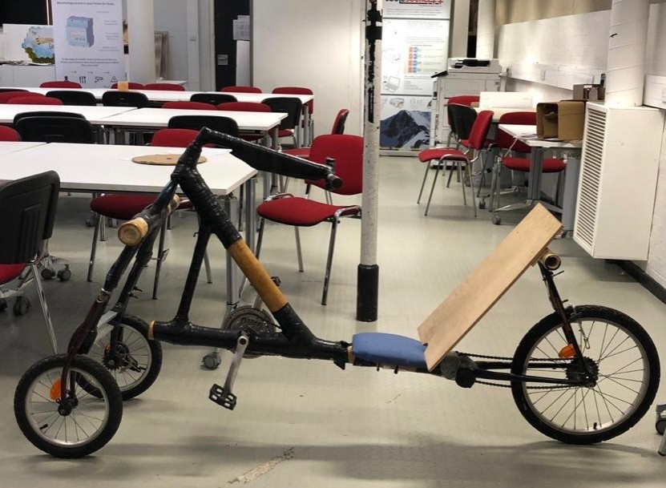
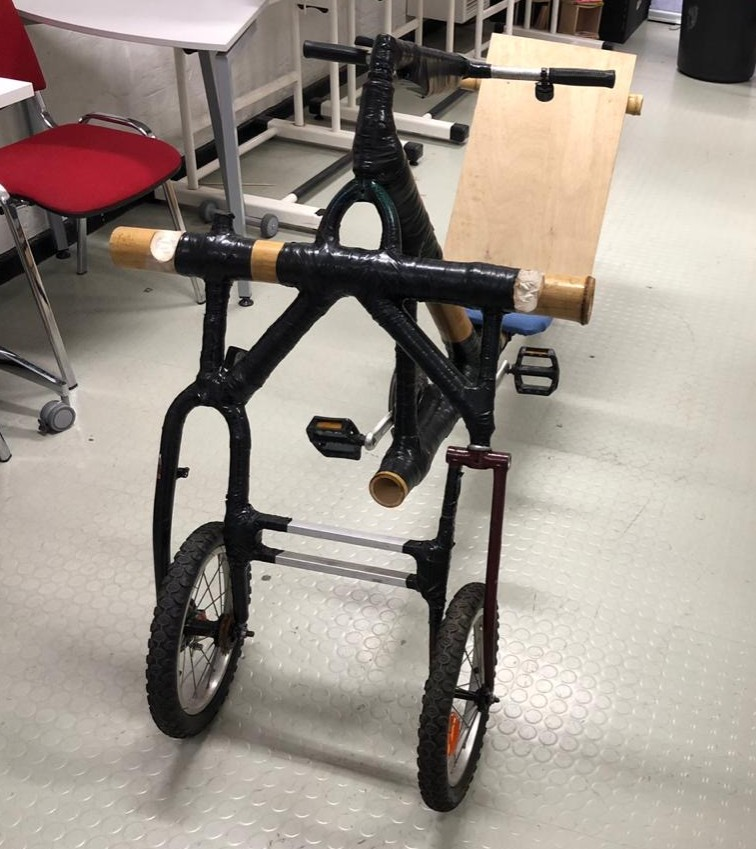
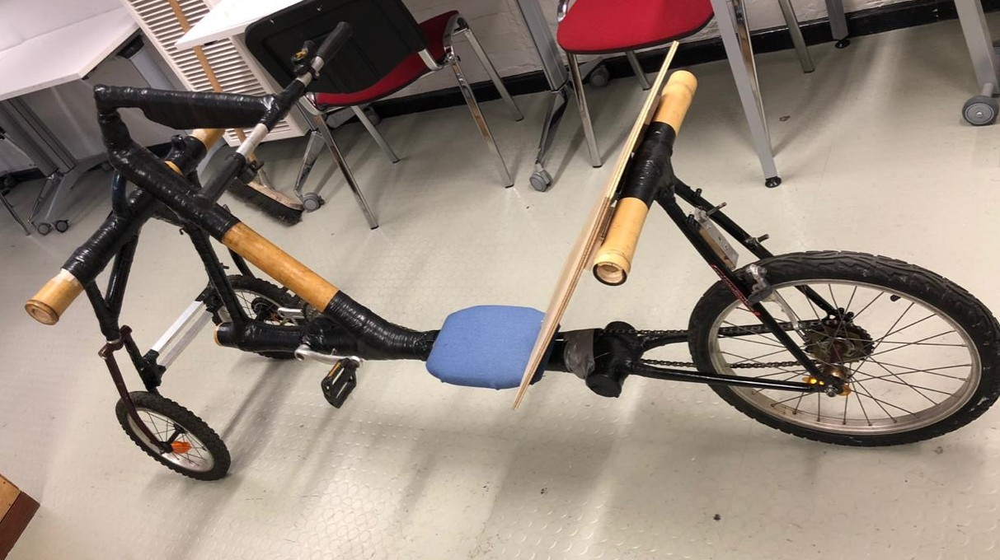
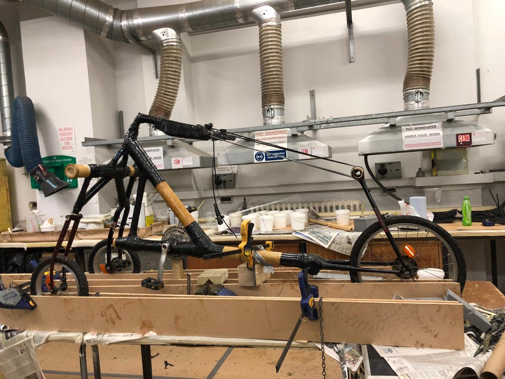
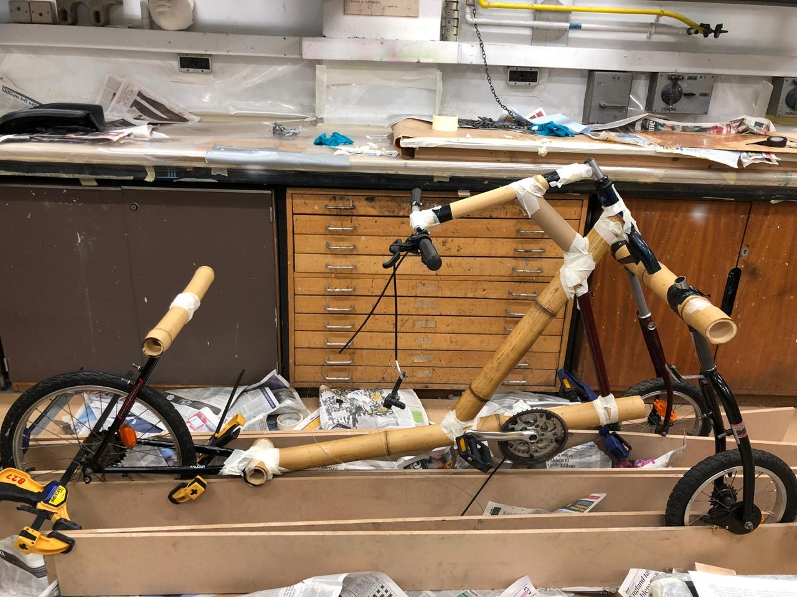
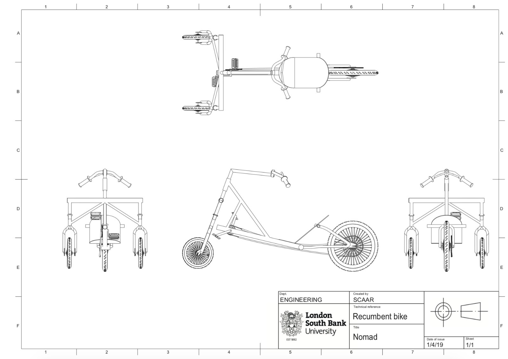
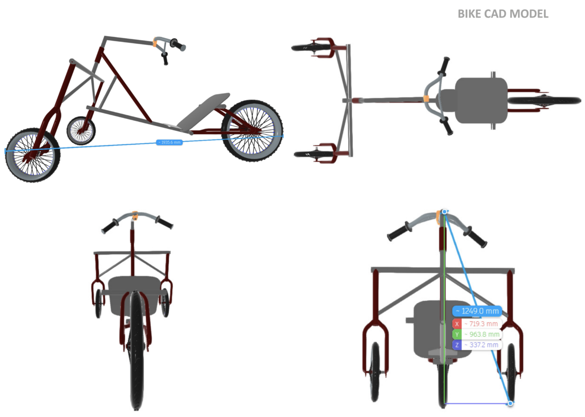

Supported seat
The reclined position supports the rider differently from a conventional upright bicycle.
A human-powered vehicle built around a simple question:
What if comfort, speed and sustainability shared the same frame?

Joy in the journey
Project overview
The SCAAR project focuses on advanced transportation design and recumbent cycle development. NOMAD was developed through collaborative design, CAD and physical prototyping.
The brief
Working collaboratively, first-year Product Design and Engineering Product Design students used reclaimed bicycles, bamboo, fiberglass tape and epoxy resin to develop a rideable prototype.
The challenge was to balance rider position, structural behaviour, sustainability and manufacturability while learning through physical making.
Vehicle anatomy

The reclined position supports the rider differently from a conventional upright bicycle.
Bamboo members are reinforced with fiberglass tape and epoxy resin as part of the structural build.
Existing bicycle parts are reused and reorganised within the recumbent layout.
The stretched layout creates the space required for the lower, reclined riding position.
Why recumbent?
NOMAD starts with a recumbent riding position: the rider sits lower, leans back into a supported seat, and extends the legs forward.
That single decision affects the vehicle's proportions, steering, centre of gravity, comfort and aerodynamic profile. The slideshow highlights the four design consequences that shaped the project.
Reclining the rider reduces the frontal profile presented to the airflow, creating a more aerodynamic starting point than an upright riding position.
The seat supports the rider's torso and changes how body weight is distributed, reducing reliance on the hands and arms for upper-body support.
Sitting closer to the ground changes the centre of gravity and influences stability, steering behaviour and the rider's relationship with the road.
The project connects with the School of Engineering's Aim93 initiative, which explores the performance potential of human-powered vehicles.
Physical prototype
The final form reveals the design decisions directly: frame proportions, rider position, wheel relationship and the transition from bicycle parts into a new vehicle architecture.




Development
The process moved repeatedly between geometry, modelling, fabrication and physical evaluation rather than following a purely linear path.

Study rider position, wheelbase, steering and recumbent proportions.

Develop the frame relationships before committing to fabrication.
Combine reclaimed bicycle parts with bamboo and composite reinforcement.
Evaluate alignment, seating, stability and the overall riding experience.
Computer Aided Design
Technical drawings and 3D development helped resolve proportion, packaging and structural relationships before the physical build.